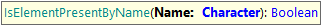

GXtest UI Commands - Control Presence
This command is useful to check if a control is present in the page, without checking if it is enabled and/or visible. This command returns true if the control is present and false if not.
IsControlPresent

Checks if a control is present
Parameters:
-
ControlName: the control name as defined in the KB
Examples of use:
&driver.IsControlPresent("CustomerPassword")
&driver.IsControlPresent("button3")
IsControlPresent
Checks if a control inside a grid or table is present
Parameters:
-
ControlName: the control name as defined in the KB
-
Row: relative row to the table where the control is located
Examples of use:
&driver.IsControlPresent("CustomerPassword", 1)
&driver.IsControlPresent("webComp2.button3", 4)
Also, this command can be executed using different locators (id, name, CSS, XPath, or LinkText) as follows:
IsElementPresentByID
Checks if an element is present using its ID.
Parameters:
-
ID: the element ID .
Example of use:
&driver.IsElementPresentByID("InvoiceTotal")
IsElementPresentByName

Checks if an element is present using its 'name' attribute.
Parameters:
-
Name: the value of the NAME attribute of the element.
Example of use:
&driver.IsElementPresentByName("total")
IsElementPresentByCSS
Checks if an element is present using its CSS selector.
Parameters:
-
CSS: the CSS selector to the element.
Example of use:
&driver.IsElementPresentByCSS("#vVAR1")
IsElementPresentByXPath
Checks if an element is present using an XPath selector.
Parameters:
-
XPath: the XPath selector to the element.
Example of use:
&driver.IsElementPresentByXPath("//textarea[@id='vVAR1']")
IsElementPresentByLinkText
Checks if an element is present using a LinkText selector.
Parameters:
-
LinkText: the link’s text of the element.
Example of use:
&driver.IsElementPresentByLinkText("Edit")
| Backlinks |
| GXtest UI Test for Web - Supported Commands |
| Toc:GXtest v4 |